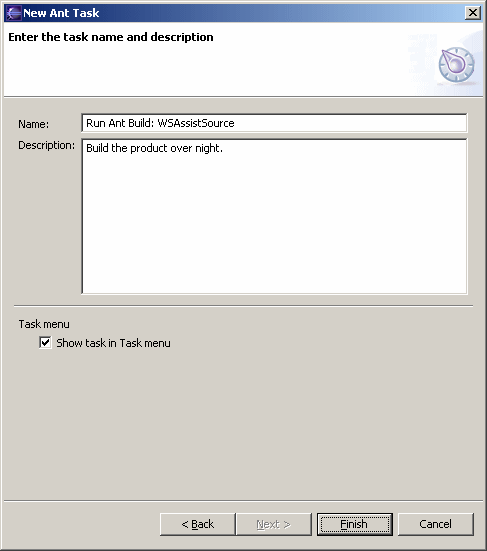

Schedule Wizard Description

In the final page of the Scheduler Wizard, you can specify:
- the name of the task (as displayed in the task list and on the task menu)
- a task description
A task may appear in a global Task menu in the menu bar, if the "Show task in Task menu" checkbox is selected. The global Task menu does not appear unless this checkbox is selected for at least one task.